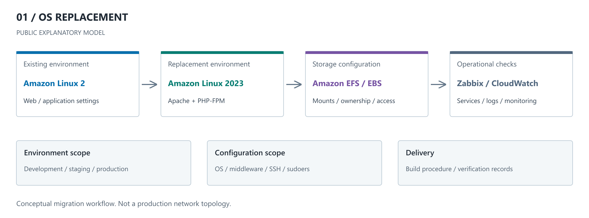
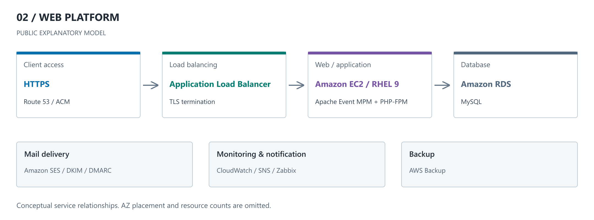
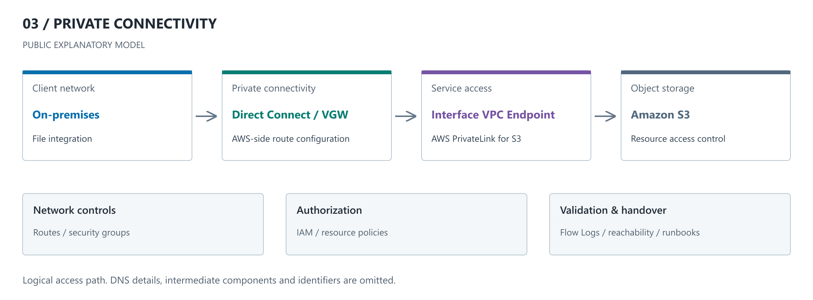
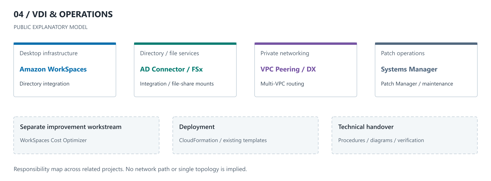

橋本 峻秀 / AWSインフラ構築・運用 / 2026年9月23日更新
構築・運用の案件実績
AWSの構築から、OS・ミドルウェア設定、監視、運用変更、手順整備までを担当してきた代表案件を掲載する
各案件ではチーム内のインフラ担当として参画し、自身の担当作業とシステム全体の構成を区別して記載する
守秘義務に配慮し、顧客名・業務データ・実環境の識別情報は非掲載
構成図は担当領域を説明するために再構成した概念図であり、実際の台数・AZ・通信経路の全体を再現したものではない
設定項目は公開可能な技術要素と記入例を示すもので、実案件のパラメータシートではない
CASE 01 / OS REPLACEMENT
Amazon Linux 2からAmazon Linux 2023へのリプレイス
既存WebシステムのOS更改に伴い、開発・検証・本番環境のインフラ構築と設定移行を担当
OSの入れ替えだけでなく、Web実行環境、ファイル配置、権限、監視を含めて新環境を整備した
- 期間
- 2025年1月～3月
- 主な技術
- EC2 / ALB / Amazon Linux 2023 / Apache / PHP-FPM / EFS / EBS / CloudWatch / Zabbix

自身の担当
- 各環境のEC2・OS設定とApache / PHP-FPMの実行環境を構築
- EFS / EBSの移行に伴うマウント・権限設定を対応
- Zabbix監視、SSH鍵・sudoersの設定を整備
- 構築手順・確認結果を整理し、レビュー指摘へ対応
実装・確認の焦点
- OS変更とアプリケーション動作の確認を切り分け、設定差分を整理
- Web実行ユーザーとファイル権限、PHP-FPM連携を確認
- アプリケーションの改修・業務機能の受入判定と、担当したインフラ設定を区別
- サービスが起動するだけでなく、監視と継続運用に必要な設定を整備
調査・改善例
環境複製後に残る旧ドメイン・ログパスの設定を確認し、移行先に合わせて修正
logrotateの設定が重複して読み込まれる問題では、設定ディレクトリ内のバックアップファイルを切り分け、配置を修正して検証した
新旧環境でのホスト名重複によるZabbix登録競合も確認し、監視設定を調整した
主な設定項目
| 項目 | 公開用の内容・表記 | 担当内容・確認観点 |
|---|---|---|
| OS | Amazon Linux 2 → Amazon Linux 2023 | パッケージ・サービス・設定ファイルの差分 |
| Web実行環境 | Apache + PHP-FPM | 連携設定、実行ユーザー、プロセスの稼働確認 |
| ストレージ | EFS / EBS パス： <MOUNT_PATH> | マウント、所有者・権限、データ配置 |
| アクセス管理 | SSH鍵 / sudoers ユーザー： <OS_USER> | 作業ユーザーの権限と接続設定 |
| 監視 | Zabbix / CloudWatch 閾値・通知先は非掲載 | 監視設定と構築後の確認 |
対応結果：複数環境のOS更改に伴う構築・設定移行を実施し、Web実行環境と運用監視を整備
案件一覧へ戻る ↑CASE 02 / WEB PLATFORM
検証・本番のWebシステム基盤を新規構築
新規AWS環境における検証・本番のインフラ構築を担当
VPC・サブネット、ALB、EC2、RDSに加え、メール送信、監視・通知、バックアップまでを設定した
- 期間
- 2024年10月～11月
- 主な技術
- VPC / ALB / EC2 / RDS for MySQL / RHEL 9 / Apache / PHP-FPM / SES / AWS Backup

自身の担当
- VPC・サブネット、EC2、ALB、RDSの構築
- RHEL上でApache Event MPMとPHP-FPMを連携
- Route 53 / ACMによるDNS・証明書設定、ALBのHTTPS終端を設定
- SESのドメイン認証、CloudWatch / SNS、Zabbix、バックアップを設定
実装・確認の焦点
- ネットワーク、Web、DBの各層に分けて疎通と設定を確認
- ApacheとPHPの処理を分離した構成で、連携設定を整備
- メール送信ではアプリケーション側の設定とDNSの認証設定を切り分け
- 検証・本番の環境差分をパラメータシートと構築エビデンスへ整理
主な設定項目
| 項目 | 公開用の内容・表記 | 担当内容・確認観点 |
|---|---|---|
| 環境区分 | 検証 / 本番 | 環境ごとの構成・設定差分を管理 |
| Web / OS | RHEL 9 / Apache Event MPM / PHP-FPM | ミドルウェアの設定と連携確認 |
| TLS / DNS | ALB / ACM / Route 53 FQDN： <APP_FQDN> | DNS検証、証明書、HTTPS終端 |
| DB | Amazon RDS for MySQL 接続先： <DB_ENDPOINT> | DB環境の構築・接続設定 |
| メール認証 | Amazon SES / DKIM / DMARC | 送信ドメインのDNS認証設定 |
| 運用 | AWS Backup / CloudWatch / SNS / Zabbix | バックアップ、監視項目、通知設定 |
対応結果：検証・本番のインフラを構築し、サービス提供に付随するメール送信・監視・バックアップを整備
案件一覧へ戻る ↑CASE 03 / PRIVATE CONNECTIVITY
Direct Connect経由の閉域ファイル連携基盤
オンプレミスからAWSへ閉域でファイルを連携する環境の構築を担当
VPC Endpoint、ルーティング、アクセス制御を設定し、顧客側で運用を引き継ぐための資料を整備した
- 期間
- 2024年12月
- 主な技術
- Direct Connect / VGW / VPC Endpoint / AWS PrivateLink / S3 / IAM / VPC Flow Logs

自身の担当
- VPC Endpointを使用した閉域連携のAWS側設定
- VGW、ルート、Security Group、IAMなどのアクセス制御設定
- Reachability Analyzer / VPC Flow Logsを用いた通信確認
- 構成・設定内容と運用手順を整理し、引き継ぎ資料を作成
実装・確認の焦点
- 通信経路が到達可能であることと、S3への操作が許可されることを分けて確認
- ネットワーク、名前解決、権限の各層で確認内容を整理
- 接続元・接続先の設定差分や資料の不整合を確認
- 回線自体の敷設・事業者側設定ではなく、担当したAWS側の設定を説明
主な設定項目
| 項目 | 公開用の内容・表記 | 担当内容・確認観点 |
|---|---|---|
| 接続方式 | Direct Connect / VGW | AWS側のルーティングと接続経路 |
| サービス接続 | S3用Interface VPC Endpoint | プライベート接続の設定と到達性 |
| アドレス | <VPC_CIDR><ON_PREMISES_CIDR> | 実値は非掲載。接続範囲とルートの対応を管理 |
| アクセス制御 | Security Group / IAM / S3側の制御 | 通信許可とリソースへの操作権限を分離 |
| 調査・引き継ぎ | VPC Flow Logs / Reachability Analyzer / 運用手順 | 到達性・通信記録と設定内容を整理 |
対応結果：閉域ファイル連携のAWS側設定と確認を実施し、顧客側の運用に向けて技術資料・手順を整備
案件一覧へ戻る ↑CASE 04 / VDI & OPERATIONS
WorkSpaces基盤・閉域接続と運用改善
継続的に担当した顧客環境で、VDIのコスト最適化と、後続のマルチVPC基盤構築に参画
関連する取り組みをまとめて掲載しており、単一時点の一つの構成を示すものではない
- 期間
- 2025年4月：コスト最適化
2025年9月～10月：閉域VDI基盤 - 主な技術
- WorkSpaces / AD Connector / FSx / VPC Peering / Direct Connect / Systems Manager / CloudFormation

自身の担当
- 複数VPC間のルーティング、VPC Peering、Direct Connect接続に伴うAWS側設定
- WorkSpaces / AD Connectorの連携、FSxのマウントを対応
- SSM Patch Manager / Maintenance Windowsの設計・設定
- CloudFormationによる既存ソリューションの展開とCost Optimizerの導入
- 顧客定例で技術検証結果・構成案・対応方針を説明
担当範囲の区別
- Cost Optimizerをゼロから独自開発した実績ではなく、既存ソリューションの導入・設定として記載
- VDI関連サービスの構築と、Windows内のAD・GPO設定変更の担当は区別
- 技術移管資料で扱う手順すべてを、本番環境で実施した業務とは扱わない
- コスト削減額・削減率は確定値を掲載していない
主な設定項目
| 項目 | 公開用の内容・表記 | 担当内容・確認観点 |
|---|---|---|
| ネットワーク | 複数VPC / VPC Peering / Direct Connect | 経路・通信許可、閉域接続の設定 |
| VDI・ファイル | WorkSpaces / AD Connector / FSx | ディレクトリ連携、ファイル共有のマウント |
| パッチ運用 | Patch Manager / Maintenance Windows | 対象ノード、メンテナンス枠、実行結果の確認 |
| IaC | CloudFormation | 既存テンプレートの展開とパラメータ設定 |
| コスト最適化 | Cost Optimizer for Amazon WorkSpaces | 利用料高騰への対策として導入し、課金最適化を支援 |
対応結果：閉域VDI基盤の構築・運用設定に参画し、パッチ管理とコスト最適化の仕組みを導入
技術移管・個人検証
2026年8月～9月には、VDI環境のスキルトランスファー向け資料を作成
下記は公開用に整理したPoC・技術手順であり、実案件の画面・設定値をそのまま公開するものではない
その他の構築・改善経験
| 領域 | 技術 | 担当内容 |
|---|---|---|
| 構成管理・初期設定 | AWX / Ansible / RHEL / Amazon Linux | 既存の自動化を利用したOS・ミドルウェアの設定投入、構築後の調査・修正 |
| DB移行・更新 | EC2 / PostgreSQL / RDS / Aurora | DB移設用の環境構築、更新前の検証環境作成、ログ管理・監視の整備 |
| リモートアクセス | AWS Client VPN / ACM / ALB | 接続環境の構築、証明書不整合の調査、再構築と接続確認 |
| 標準化・技術共有 | Windows Server / AMI / Zabbix / 手順書 | 構築・複製・監視設定手順の新規作成、チーム内レクチャーとレビュー |
職歴・資格・技術環境の一覧は職務経歴書に掲載